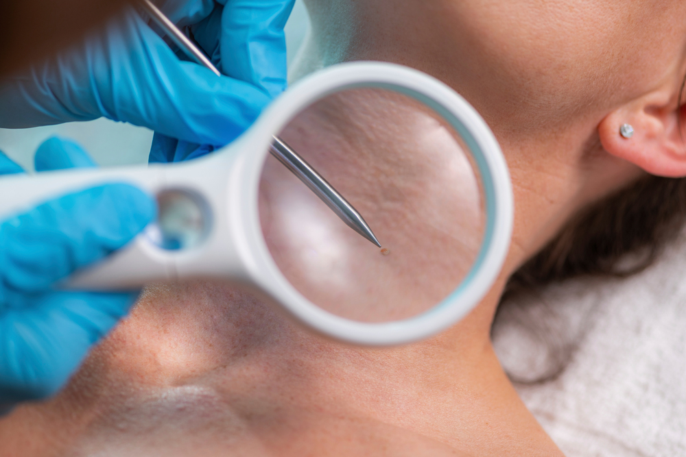

티눈 및 사마귀 제거술이란?
티눈은 반복적인 압력과 마찰로, 사마귀는 바이러스 감염으로 발생하므로 병변을 구분한 뒤 치료 방법을 정합니다.
각질 제거, 약물, 냉동치료 등을 고려하며 일부 병변은 절제나 레이저 등의 제거 치료를 검토합니다.
압박으로 생기는 티눈과 바이러스성 사마귀를 구분하고,
병변의 위치와 깊이에 맞는 제거 방법을 선택합니다.

티눈은 반복적인 압력과 마찰로, 사마귀는 바이러스 감염으로 발생하므로 병변을 구분한 뒤 치료 방법을 정합니다.
각질 제거, 약물, 냉동치료 등을 고려하며 일부 병변은 절제나 레이저 등의 제거 치료를 검토합니다.

병변의 원인을 구분해 제거와 재발 관리를 계획합니다.
당일 퇴원 여부는 수술 후 회복 상태에 따라 결정합니다.
티눈과 사마귀를 구분하고 병변의 범위와 피부 상태를 확인합니다.
통증과 재발 요인, 기존 치료 반응에 맞춰 제거 방법을 결정합니다.
치료 부위는 물에 오래 담그지 말고 안내에 따라 관리하세요.
티눈은 압박·마찰 주의, 사마귀는 접촉 후 손 씻기·재발 확인.